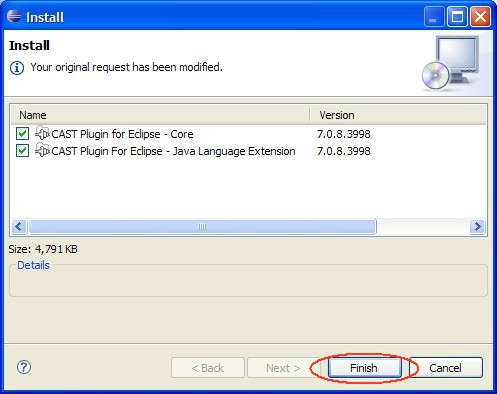

The installation process will then begin:

To install the CAST Plug-in for Eclipse in Eclipse 3.4.x:
The installation process will then begin:
Please refer to Plug-in configuration for more information about post install configuration process.